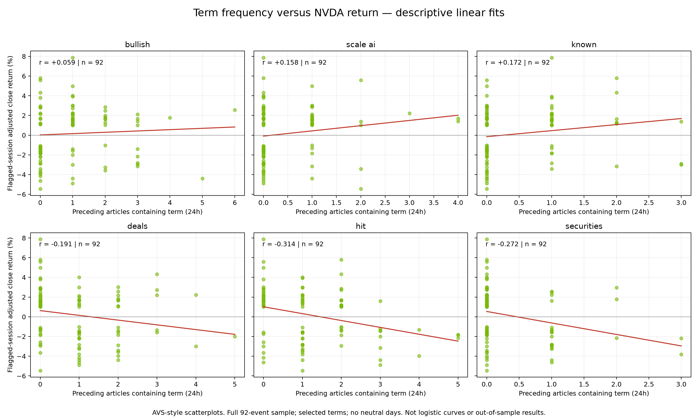
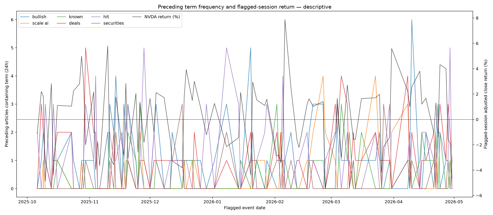
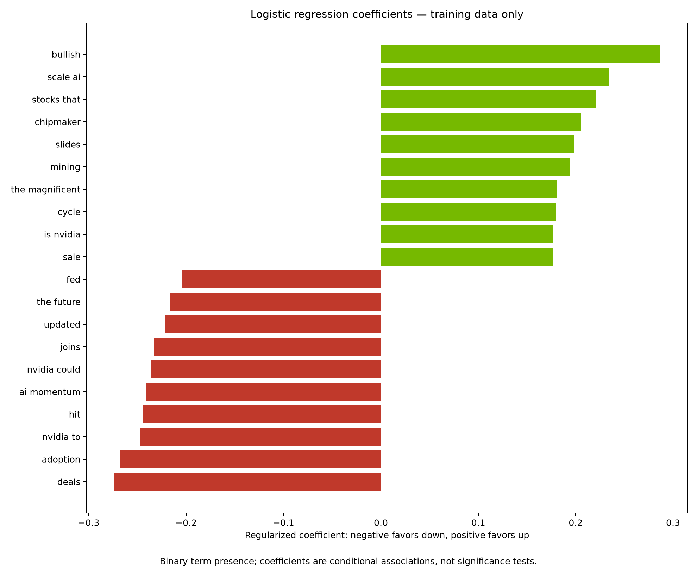
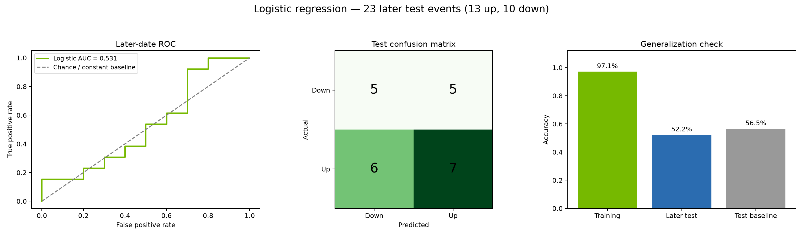
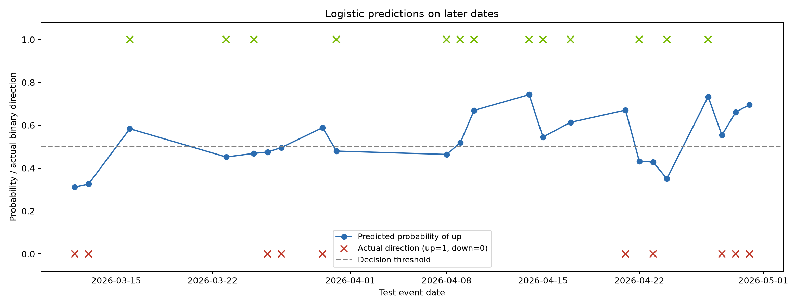

The first two charts mirror AVS’s descriptive plot format. Frequency here means distinct preceding articles containing a term, with the strict 24-hour cutoff. The remaining charts evaluate logistic regression. Neither establishes causation.
Later-date accuracy: 52.2%, versus 56.5% for the baseline. AUC: 0.531. This test does not establish useful predictive performance.




